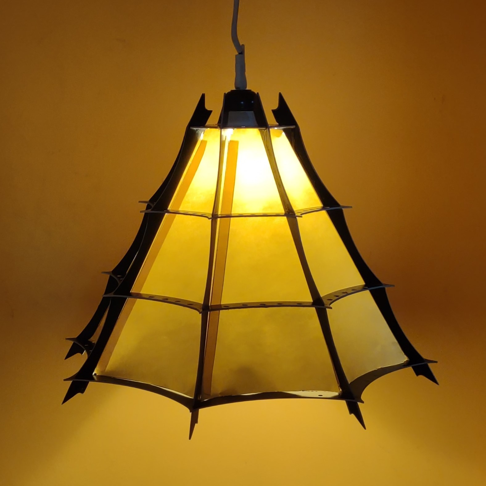
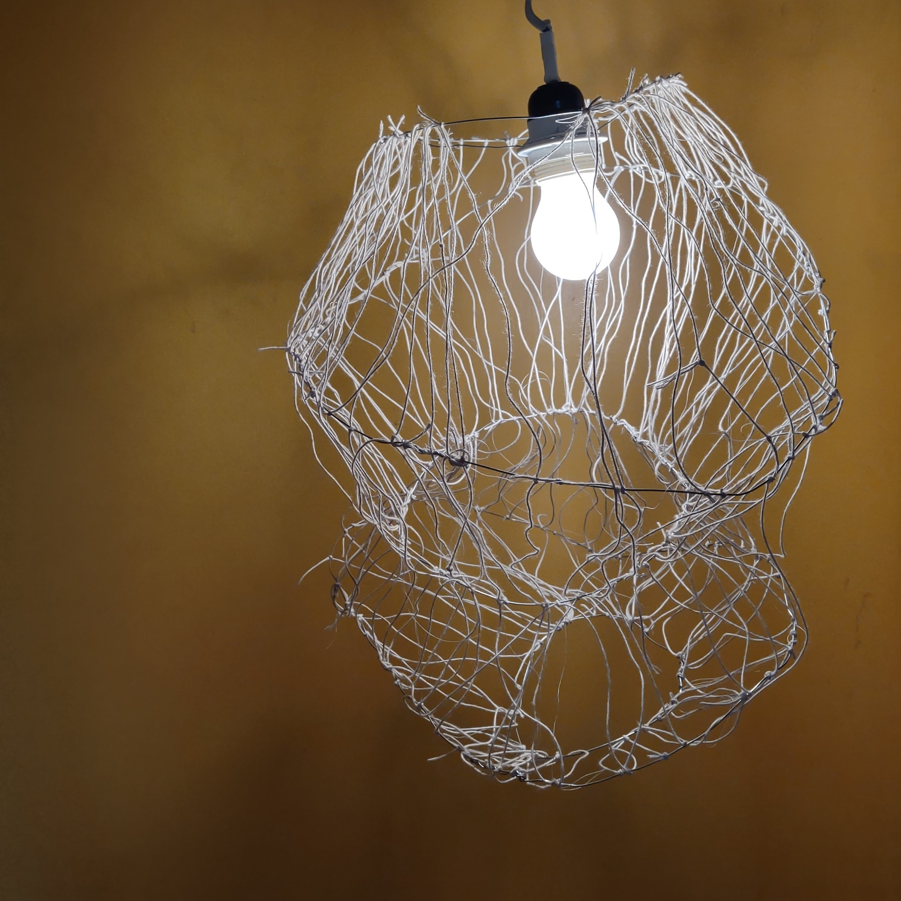

Webs
During this project, I designed and built a lampshade following an iteration process. I was inspired by spider webs and the many shapes they can have.
A first lampshade was partly inspired by gothic cathedrals as some of the shapes we can see in them are a bit reminiscent of the shapes some spider webs can have. I made a 3D model using Fusion 360 and used a water jet cutter to cut metal pieces.
I then went further away from the very industrial and industrial feel of this first lampshade and decided to take inspiration in more messy spider webs and in cocoons in order to make a design that looked a lot more natural, very different from the first.
Instead of using a machine to create perfect metal shapes, I then hand made two lampshades, both with a metal wire base to give them a messier look.
I added strings to the first one, really increasing the messy nature of it and giving a result resembling a spider web very closely, to the point of removing the objects use. The second one was more fonctional version of that same idea, where layers of ribbons sewn all around the metal wire gave it a cleaner shape and added interesting lights effect.

